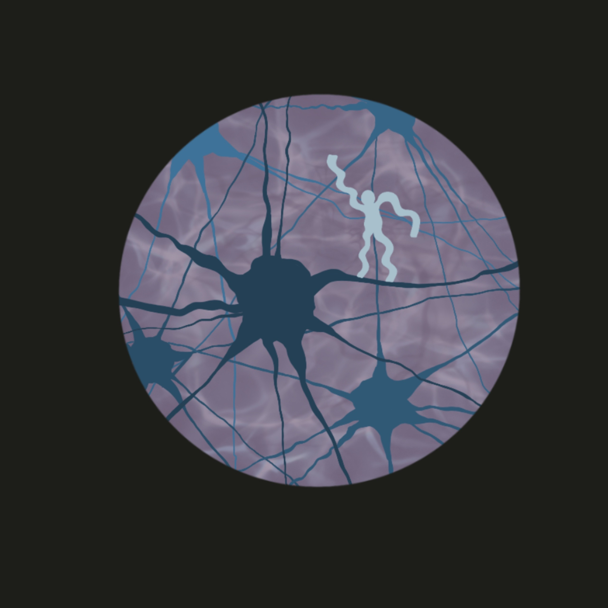

Quiropráctica aMar Illustrations by XP (2023)
Quiropráctica aMar was built by Dr. Catalina Puig and is currently based in Puerto Viejo, Costa Rica. My opinion may be biased, but if you've ever been her patient you know: this is not your common 'snap n crack' chiropractor experience. She treats every patient with gentle love. She cares not for quick fixes but instead works with you to discover the root of your health issues, be it physical or mental.
Check out their website and instagram.
